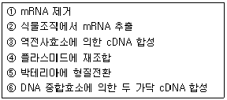

종자기사 (2013-06-02 기출문제)
1과목: 종자생산학
1. 종자의 발아촉진 및 유묘 생육의 균일화를 기하기 위한 방법으로 사용하고 있는 삼투프라이밍 재료로 가장 많이 이용되고 있는 것은?
- PEG
- H2SO4
- KH2PO4
- NaCl
(정답률: 78%)

2. 다음 중 발아촉진에 효과가 가장 큰 물질은?
- gibberellin
- abscisic acid
- parasorbic acid
- momilactone
(정답률: 89%)
3. 암술을 구성하고 있는 각 명칭의 나열로 알맞은 것은?
- 자방, 화주, 주두
- 자방, 화주, 약
- 자방, 화사, 주두
- 자방, 화사 약
(정답률: 81%)
4. 벼과(禾本科) 종자의 초엽이 가진 기능을 바르게 나타낸 것은?
- 양분의 저장
- 발아시 배(胚)에 양분 전달
- 발아시 어린 잎의 보호
- 발아시 종자근 보호
(정답률: 84%)
5. 종자세(seed vigour)와 발아능(seed viability)의 관계 설명으로 옳지 않은 것은?
- 발아능은 묘의 출현 속도와 균일성에 대한 능력이다.
- 종자의 퇴화가 진행되면 종자세의 저하는 발아능의 저하보다 앞서 진행한다.
- 종자의 퇴화정도는 종자세와 발아능의 차이라고 할 수 있다.
- 종자세는 퇴화과정 중에 일어나는 측정 가능 요소를 정량적으로 도출하여 검사한다.
(정답률: 34%)
6. 가지에 대한 설명으로 가장 적합한 것은?
- 자화수분작물이며 자연교잡율이 비교적 낮다.
- 자화수분작물이며 자연교잡율이 비교적 높다.
- 타화수분작물이며 자연교잡율이 비교적 높다.
- 자웅이화이며 자연교잡율이 비교적 낮다.
(정답률: 49%)
7. 우리나라 주요 작물의 보급종 종자검사기준으로 옳게 설명된 것은?
- 벼의 정립률 최저한도는 98.0%이며, 이품종 최고한도는 0.01%이다.
- 밀의 정립률 최저한도는 97.0%이며, 이품종 최고한도는 0.20%이다.
- 콩의 정립률 최저한도는 98.0%이며, 이품종 최고한도는 0.10%이다.
- 옥수수 교잡종의 정립률 최저한도는 98.0%이며, 이품종 최고한도는 0.50%이다.
(정답률: 72%)
8. 다음 중 배추과 작물의 채종재배시 꼭 필요로 하는 미량요소는?
- 철
- 망간
- 붕소
- 몰리브덴
(정답률: 65%)
9. 다음 중 식물의 개화를 유도하는 일반적인 요인으로만 나열한 것은?
- C/N율, 식물호르몬
- 식물호르몬, 침관수
- 침관수, 방사선
- 방사선, C/N율
(정답률: 85%)
10. 양파의 일대교잡종 채종에 주로 이용되는 유전적 특성은?
- 자가불화합성
- 내혼약세
- 감광성
- 웅성불임성
(정답률: 75%)
11. 채종재배시 웅성불임(雄性不稔)을 이용하는 주된 이유는?
- 종자의 품질이 개선
- 품종의 내병성이 증가
- 제웅(除雄)이 불필요하고 수분조작이 용이
- 종자순도유지가 용이
(정답률: 74%)
12. 콩 자엽의 염색체 수는 얼마인가?
- 1N
- 2N
- 3N
- 4N
(정답률: 64%)
13. 세포질·핵유전의 양식을 이용한 F1의 채종체계가 아닌 작물은?
- 양파
- 고추
- 당근
- 양배추
(정답률: 56%)
14. 다음 중 호광성 종자인 것은?
- 토마토
- 가지
- 상추
- 호박
(정답률: 82%)
15. 발아시험시 재시험을 해야 할 경우에 해당하지 않는 것은?
- 발아시험 결과가 식물독이나 곰팡이의 번식으로 신빙성이 없을 때
- 시험조건이 잘못되었을 때
- 묘의 평가가 잘못되었을 때
- 반복간의 발아율이 ±5% 범위를 벗어날 때
(정답률: 70%)
16. 양파 채종재배시 모구선발에 관한 설명으로 잘못된 것은?
- 구의 크기가 중간보다 작은 것을 선발한다.
- 줄기의 목이 가늘과 단단한 것을 선발한다.
- 8월 말에 모구를 선발한다.
- 맹아한 것과 부패한 것은 가려낸다.
(정답률: 64%)
17. 다음 중 종자의 저장능력과 관계되는 성질을 검사하는 것은?
- 발아 검사
- 병해 검사
- 수분 검사
- 순도 검사
(정답률: 82%)
18. 자가불화합성 식물에서 자식계통을 얻기 위하여 주로 이용하는 방법은?
- 뇌수분
- 저온처리
- 자연교잡
- 살정제 사용
(정답률: 87%)
19. 종자 전염병 방제를 위한 종자 처리 방법 중 물리적 방법이 아닌 것은?
- 냉수침법
- 자외선, 적외선 조사법
- 온탕침법
- 도말법
(정답률: 69%)
20. 다음 중 종자활력과 관계가 가장 깊은 것은?
- DNA 수준
- aldehyde 수준
- m-RNA 수준
- ATP 함량
(정답률: 84%)
2과목: 식물육종학
21. 다음의 형질변이를 감별하는 방법 중 옳지 않은 것은?
- 후대검정에 의한 유전변이와 환경변이 감별
- 후대검정에 의한 유전자형의 동형성 여부 감별
- 교잡검정에 의한 양적형질과 질적형질의 감별
- 특성검정에 의한 연속변이와 불연속변이 감별
(정답률: 37%)
22. 약배양 기술을 육종에 이용하는 이유로 가장 알맞은 것은?
- 양적형질의 개량에 효과적이다.
- 대부분의 작물에서 식물체 분화가 잘 되어 널리 이용되고 있다.
- 반수체만 출현하지만 정상적인 식물체가 되어 개화한다.
- 육종연한을 단축할 수 있다.
(정답률: 67%)
23. 인위적으로 반수체 식물을 만드는 조직배양 방법은?
- 배배양
- 약배양
- 생장점배양
- 원형질체배양
(정답률: 68%)
24. 일반적으로 잡종 초기 세대에 검정하여 선발할 수 있는 형질은?
- 품질
- 지역적응성
- 꽃 색깔
- 수량성
(정답률: 79%)
25. 유전력이 높은 형질에 대한 분리 세대에서의 선발에 관한 설명으로 틀린 것은?
- 조기 세대에서 선발을 시작할 수 있다.
- 개체 선발의 효과가 크다.
- 환경의 영향을 크게 받는다.
- 표현형에서 유전자형이 잘 추정된다.
(정답률: 65%)
26. 다음 중 유전자은행 작성 과정을 순서대로 바르게 나열한 것은?

- ② → ③ → ① → ⑥ → ④ → ⑤
- ② → ⑥ → ① → ③ → ④ → ⑤
- ② → ⑥ → ③ → ① → ⑤ → ④
- ② → ① → ③ → ⑥ → ④ → ⑤
(정답률: 55%)
27. 양적 형질의 특징은?
- 양적 형질은 폴리진이 지배한다.
- 양적 형질은 불연속변이한다.
- 양적 형질은 표현형의 구분이 분명하다.
- 일반적으로 양적 형질은 유전력이 매우 높다.
(정답률: 64%)
28. 교배친 각각이 순계일 때 유전적 균일성이 가장 높은 세대는 ?
- 교배친
- F1
- F2
- F10
(정답률: 62%)
29. 순계분리육종법에 관선 설명으로 틀린 것은?
- 타식성 작물에 주로 이용한다.
- 기본 재료는 될 수 있는 대로 많은 순계와 우량한 계통을 가지고 있어야 한다.
- 제 1년째는 개체선발을 주로 실시한다.
- 제 2년째는 선발개체를 각각 1계통으로 한다.
(정답률: 65%)
30. 강낭콩에 대한 선발시험을 통하여 식물에 나타나는 변이는 유전적 변이와 비유전적 변이가 있으며, 유전적 변이만이 선발의 대상이 된다는 선발이론의 기초를 제공한 사람은?
- 다윈
- 뮐러
- 요한센
- 피셔
(정답률: 58%)
31. 품종의 퇴화 원인을 3가지로 크게 구별할 때 이에 속하지 않는 것은?
- 유전적인 퇴화
- 생리적인 퇴화
- 기후적인 퇴화
- 병리적인 퇴화
(정답률: 67%)
32. 웅성불임성을 이용하여 F1채종을 하는 작물만으로 나열된 것은>
- 시금치, 호박, 완두
- 배추, 상추, 오이
- 양파, 고추, 당근
- 토마토, 강낭콩, 참외
(정답률: 68%)
33. 유전자원을 수집·보존해야 할 가장 합당한 이유는?
- 멘델 유전법칙을 확인하기 위함
- 다양한 육종소재로 활용하기 위함
- 야생종을 도태시키기 위함
- 개량종의 보급을 확대시키기 위함
(정답률: 78%)
34. 도입육종에 대한 설명이 맞는 것은?
- 도입지역의 기후와 토양조건 등은 중요하지 않다.
- 육종연한의 단축과는 무관하다.
- 수량성과 적응성검정을 하지 않아도 된다.
- 도입식물과 품종에 대한 병해충검사를 실시한다.
(정답률: 84%)
35. 변이 생성 방법으로 적절하지 않은 것은?
- 원형질 융합
- 형질 전환
- 영양번식
- 방사선 처리
(정답률: 88%)
36. 중복수정 과정에 대한 설명으로 틀린 것은?
- 웅핵과 난핵이 결합하여 2n의 배(胚)를 형성한다.
- 웅행과 2개의 극핵이 결합하여 3n의 배유(胚乳)를 형성한다.
- 배낭 1개에는 하나의 난핵과 2개의 극핵이 있으므로 배낭 1개 중복수정에는 최소 2개의 화분관이 필요하다.
- 배와 배유는 거의 동시에 그 형성이 시작되어 수정된다.
(정답률: 63%)
37. 찰벼(wxwx)를 모본으로 하고 메벼(WXWX)를 부본으로 하여 얻은 F1 종자에 대한 설명으로 틀린 것은?(오류 신고가 접수된 문제입니다. 반드시 정답과 해설을 확인하시기 바랍니다.)
- 배유의 크세니아(xenia)현상을 볼 수 있다.
- 배의 유전자형읜 Wxwx 이다.
- 메벼의 특성을 지닌다.
- 배유의 유전자형은 WxWxwx 이다.
(정답률: 51%)
38. 생산력 검정을 위한 포장시험(plot technique)을 할 때 주의사항으로 틀린 것은?
- 기상환경은 작물생육에 이상적인 조건이 되도록 조절한다.
- 토양의 균일성을 유지한다.
- 반복구를 두고 신뢰도를 높이도록 한다.
- 시험 재료의 균일성을 기하도록 한다.
(정답률: 64%)
39. 환경분산량이 유전분산량의 3배일 때 유전력은 얼마인가?
- h2B = 0.00
- h2B = 0.25
- h2B = 0.50
- h2B = 1.50
(정답률: 51%)
40. 여교배 육종시 반복친을 2회 여교배한 BC2F1 식물체들에서 반복친 유전구성(genetic background)의 평균적인 회복 정도는?
- 50%
- 75%
- 87.5%
- 93.75%
(정답률: 49%)
3과목: 재배원론
41. 광합성에 대한 설명으로 틀린 것은?
- 고립상태 작물의 광포화점은 전광의 30~60% 범위이다.
- 남북이랑은 동서이랑에 비하여 수광량이 많다.
- 진정확합성속도가 0이 되는 광도를 광보상점이라 한다.
- 밀식시 줄사이(列間)를 넓히고 포기사이(株間)를 좁히면 군락 하부로의 투광률이 좋아진다.
(정답률: 47%)
42. 품종의 기상생태형에 관한 설명으로 올바른 것은?
- 묘대일수감응도는 감온형인 품종이 감광형인 품종보다 높다.
- 파종과 모내기를 일찍이 할 때 만생종은 감온형이다.
- 조기수확을 목적으로 조파조식 할 때에는 감광형 품종이 적합한다.
- 만식적응성은 감온형이 감광항보다 크다.
(정답률: 40%)
43. 파종양식에 따라 산파하게 되므로 파종량이 기장 많이 소요되는 작물은?
- 메밀
- 옥수수
- 들깨
- 배추
(정답률: 49%)
44. 식물 생장에 대한 무기영양설(mineral theory)을 제창한 사람은?
- 리비히(Liebig)
- 다윈(Darwin)
- 드브리스(De Vries)
- 우장춘
(정답률: 67%)
45. 다음 중 T/R 비율이 감소하는 경우는?
- 적화 및 적과
- 토양통기의 불량
- 질소질비료의 다량 시용
- 파종기 및 이식기의 지연
(정답률: 45%)
46. 작물의 생육 중 냉온(冷溫)을 만나면 일어나는 현상으로 옳지 않은 것은?
- 질소, 인산, 가리, 규산, 마그네슘 등의 양분흡수가 저해된다.
- 물질의 동화와 전류가 저해된다.
- 질소동화가 저해되어 암모니아 축적이 적어진다.
- 호흡이 감퇴되어 원형질 유동이 감퇴·정지하여 모든 대사기능이 저해된다.
(정답률: 61%)
47. 광이 작물생육에 미치는 영향에 대한 설명으로 옳지 않은 것은?
- 광합성은 청색광과 적색광이 효과적이다.
- 굴광성은 청색광이 가장 효과적이다.
- 과실의 착색은 적색광이 효과적이다.
- 줄기의 신장억제는 자외선이 효과적이다.
(정답률: 41%)
48. 다음 중 무배유종자로만 이루어진 것은?
- 벼, 팥
- 콩, 팥
- 보리, 벼
- 옥수수, 콩
(정답률: 75%)
49. 종자의 저장양분 중 전분의 분해와 합성에 관련되는 효소는?
- amylase - phosphorylase
- phosohorylase - diastase
- protease - amylase
- lipase - diastase
(정답률: 53%)
50. 광과 작물의 생리작용에 대하여 올바르게 기술한 것은?
- 광합성에 유리한 광파장은 황색과 주황색이다.
- 굴광현상을 유도하는 광은 청색광이다.
- 벼의 광호흡은 옥수수보다 작다.
- 알팔파에 광이 조사되면 가공을 닫게 하여 증산을 억제한다.
(정답률: 68%)
51. 하루 중의 기온변화, 즉 기온의 일변화(변온)와 식물의 동화물질 축적과의 관계를 바르게 설명한 것은?
- 낮의 기온이 높으면 광합성과 합성물질의 전류가 늦어진다.
- 기온의 일변화가 어느 정도 커지면 동화물질의 축적이 많아진다.
- 낮과 밤의 기온이 함께 상승할 때 동화물질이 축적이 최대가 된다.
- 낮과 밤의 기온차가 적을수록 합성 물질의 전류는 촉진되고 호흡 소모는 적어진다.
(정답률: 67%)
52. 동상해의 재배적 대책으로 옳지 않은 것은?
- 맥류는 답압을 한다.
- 채소와 화훼류는 보온재배를 한다.
- 맥류재배에서 이랑을 세워 뿌림골을 깊게 한다.
- 맥류재배에서 칼리질 비료를 줄이고, 퇴비를 종자 밑에 준다.
(정답률: 49%)
53. 감자(뿌리작물)의 수량계산 공식으로 옳은 것은?
- 식물체당 무게 × 단위면적당 식물체 수
- 단위면적당 덩이줄기 수 × 식물체당 무게
- 단위면적당 식물체 수 × 단위면적당 덩이줄기 수
- 단위면적당 식물체 수 × 식물체당 덩이줄기 수 × 덩이줄기의 무게
(정답률: 67%)
54. 작물의 풍해에 대한 설명으로 잘못된 것은?
- 벼에서 목도열병이 발생한다.
- 상처가 나면 광산화반응을 일으킨다.
- 풍속이 강해지면 광합성이 증대된다.
- 수정이 저해된다.
(정답률: 73%)
55. 작물의 분화과정에서 첫 번째 단계는 ?
- 도태와 적응을 통한 순화의 단계
- 유전적 변이의 발생 단계
- 유전적인 안정상태를 유지하는 고립 단계
- 어떤 생태조건에서 잘 적응하는 단계
(정답률: 60%)
56. 벼의 만식적응성과 관련이 깊은 특성은 ?
- 묘대일수감응도
- 내비성
- 내건성 증대
- 왜화재배
(정답률: 73%)
57. 나팔꽃 대목에 고구마 순을 접목시켜 재배하는 목적은?
- 개화촉진
- 경엽의 수량 증대
- 내건성 증대
- 왜화재배
(정답률: 58%)
58. 벼 내도열병의 특성을 바르게 설명한 것은?
- 탄소/질소율이 높은 품종이 강하다.
- 병원균 침입은 규산/질소율이 낮은 품종이 어렵다.
- 기용질소율이 높은 품종이다.
- 벼의 표피세포가 질소화된 품종이다.
(정답률: 46%)
59. 식물의 생육이나 성숙을 생장과 분화의 두 측면으로 보는 지표로 가장 적당한 것은?
- C/N 율
- T/R 율
- G-D 균형
- DD50
(정답률: 58%)
60. 내건성(drought resistance)이 강한 작물의 형태적 특성이 아닌 것은?
- 표면적/체적의 비가 작다.
- 뿌리가 깊고 지상부에 비하여 근군의 발달이 좋다.
- 기공의 크기가 크고, 밀도가 적다.
- 저수조직이 발달되어 있다.
(정답률: 68%)
4과목: 식물보호학
61. 논에 발생하는 다년생 광엽잡초는?
- 피
- 가래
- 바랭이
- 올방개
(정답률: 39%)
62. 나비목 해충이 알에서 부화(깨어난) 후 3번 탈피하였을 때 유충의 영기는?
- 2령충
- 3령충
- 4령충
- 5령충
(정답률: 70%)
63. 다음 중 밭에서 많이 나는 잡초로 짝지어진 것은?
- 가래, 여뀌바늘, 벗풀
- 도꼬마리, 개비름, 바랭이
- 가래, 도꼬마리, 올미
- 벗풀, 개비름, 알방동사니
(정답률: 53%)
64. 작물 살충제로서 약제 처리지점과 해충 가해지점이 달라도 방제가 되는 살충제는?
- 접촉제
- 식독제
- 침투성살충제
- 전착제
(정답률: 61%)
65. 솔잎혹파리의 월동태로 가장 적당한 것은?
- 알
- 유충
- 번데기
- 성충
(정답률: 56%)
66. 제초제 저항성 잡초의 출현에 대한 대책이 아닌 것은?
- 저항성 작물 개체군 개발
- 제초제 특성에 따른 순환적용
- 효과가 탁월한 제초제의 반복 처리
- 다양한 작물로의 윤작
(정답률: 66%)
67. 완전변태를 하는 목(目)은?
- 메뚜기목
- 나비목
- 총채벌레목
- 노린재목
(정답률: 74%)
68. 식물병원세균에 의한 병징 중에서 가장 흔하게 접하는 증상으로만 나열된 것은?
- 모자이크, 줄무늬
- 황화, 위축
- 무름, 궤양
- 흰가루, 빗자루
(정답률: 68%)
69. 수직저항성과 거리가 먼 것은?
- 소수인자 저항성
- 일반적 저항성
- 주동 저항성
- 질적 저항성
(정답률: 46%)
70. 분제가 갖추어야 할 물리적 성질과 거리가 먼 것은?
- 토분성
- 현수성
- 분산성
- 비산성
(정답률: 66%)
71. 다음 중 식물병원균이 생산하는 독소는?
- 큐티나아제(cutinase)
- 펙티나아제(pectinase)
- 아밀라아제(amylase)
- 파이토니바인(phytonivein)
(정답률: 53%)
72. 해충의 발생을 예찰하는 실질적인 목적으로 알맞은 것은?
- 해충의 생활사를 알아보기 위하여
- 해충의 유아 등에 대한 반응을 알아보기 위하여
- 해충의 발생주기를 알아보기 위하여
- 가장 적절한 방제대책을 마련하기 위하여
(정답률: 71%)
73. 1년에 2회 발생하며 볏짚이나 볏 그루 속에서 유충태로 월동한다. 4월경부터 용화하기 시작하며 벼에 피해를 주는 해충으로 1회 발생 최성기는 6월 상순, 2회 발생 최성기는 8월 중순경이며 난기(卵期)가 5~7일 소요되는 해충은?
- 두줄꼬마밤나방
- 애멸구
- 이화명나방
- 끝동매미충
(정답률: 74%)
74. 배추의 무사마귀병을 방제하는 방법으로 적당하지 않은 것은 ?
- 토양소독
- 저항성 품종 재배
- 양배추로의 윤작
- 토양산도의 교정
(정답률: 64%)
75. 해충종합관리(IPM)의 설명으로 가장 옳은 것은?
- 한 지역에서 동시에 방제하는 것을 뜻한다.
- 농약의 항공방제를 말한다..
- 여러 방제법을 조합하여 적용한다.
- 한 방법으로 방제한다.
(정답률: 73%)
76. 제초제 주제(유효성분)의 효과를 높이는 데 이용되는 것은?
- 협력제
- 전착제
- 증량제
- 유화제
(정답률: 51%)
77. 인체 1일 섭취허용량은 실험동물에서 전혀 건강에 영향이 없는 양에 보통 얼마의 안전계수로 곱하여 산출하는가?
- 0.1
- 0.3
- 0.5
- 0.01
(정답률: 60%)
78. 작물 피해의 주요 원인 중 비생물적 요소인 것은?
- 진균류, 세균류 등에 의한 피해
- 잡초의 피해
- 파이토플라스마(phytoplasma)에 의한 피해
- 농약에 의한 피해
(정답률: 76%)
79. 펜티온 50% 유제를 0.⑤%로 희석하여 10a당 100L로 살포할 때 약제의 소요량(㎖)은? (단, 약제의 비중은 1.2 이다.)
- 65.3
- 75
- 83.3
- 100
(정답률: 46%)
80. 다음 중 항생제가 아닌 것은?
- streptomycin
- blasticidin-S
- cycloheximide
- dithiocarbamate
(정답률: 50%)
5과목: 종자관련법규
81. 종자업을 신규로 등록하고자 한다. 등록을 위해 필요한 내용 중 옳은 것은?
- 종자업을 하려는 자는 대통령령으로 정하는 시설을 갖추어야 한다.
- 종자업은 종자관리사 2인 이상을 두어야 한다.
- 종자업 등록은 관할 소재지의 도지사에게만 할 수 있다.
- 종자업자는 등록한 사항에 변경이 있을 때에는 그 사유가 발생한 날로부터 20일 내에 견경사항을 통지하여야 한다.
(정답률: 63%)
82. 종자관리요강의 벼 포장검사시 특정병에 해당되는 것은?
- 선충심고병
- 도열병
- 백엽고병
- 오갈병
(정답률: 66%)
83. 종자관련 법상 다루어지는 「심판의 종류」에 해당되지않는 것은?
- 취소결정에 대한 심판
- 품종보호의 무효심판
- 거절결정에 대한 심판
- 전용실시권에 대한 심판
(정답률: 35%)
84. 다음 중 50만원 이하의 과태료 부과에 해당하는 사람은?
- 유통종자의 품질표시를 하지 아니하고 종자를 판매한 자
- 부정한 방법으로 품종보호결정을 받은 자
- 종자업 등록을 하지 않고 종자를 생산한 자
- 품종보호권·전용실시권 또는 질권의 상속이나 그 밖의 일반승계 취지를 신고하지 아니한 자
(정답률: 50%)
85. 「종자의 수입」과 관련한 설명 중 맞는 것은?
- 국가품종 목록등재 대상작물 품종의 종자를 수입하는 경우는 신고하지 않아도 된다.
- 농업계 대학에서 옥수수 1품종의 종자 10㎏을 신고하지 않고 수입할 수 있다.
- 등록된 종자업자 소속의 연구소에서 채소종자를 수입할 경우는 수입신고를 하여야 한다.
- 사료용 옥수수 종자를 수입하는 경우는 신고하지 않아도 된다.
(정답률: 19%)
86. 「심판위원회의 기능」에 대한 설명 중 틀린 것은?
- 심판위원회는 심사관의 거절결정에 대해 심판이 청구되는 경우 재심을 실시한다.
- 심판위원회는 위원장 1명을 포함한 8명 이내의 품종보호심판위원으로 구성하되, 위원장이 아닌 심판위원 중 1명은 상임으로 한다.
- 품종보호된 후 그 품종보호권자가 품종보호권을 가질 수 없는 자가 되거나 그 품종보호가 조약등을 위반한 경우 무효심판을 청구할 수 있다.
- 심판위원회에서 무효심판에 대해 품종보호권을 무효로 한다는 심결이 확정되면 그 품종보호권은 처음부터 없었던 것으로 본다.
(정답률: 33%)
87. 종자의 보증과 관련하여 대통령령이 정하는 국제공자검정 기관은?
- ISTA의 회원기관
- UPOV
- APEC
- ASEAN
(정답률: 70%)
88. 다음 중 국가 품종등록 등재 대상작물로 맞지 않는 것은?
- 사료용 옥수수
- 간식용 옥수수
- 전분용 감자
- 튀김용 감자
(정답률: 74%)
89. 품종명칭 등록을 받을 수 있는 경우에 해당되는 것은?
- 해당 품종의 원산지를 오인하게 할 염려가 있는 품종 명칭
- 외국에 등록된 품종을 국내에서 동일한 명칭으로 등록 하는 경우
- 품종명칭의 등록출원일보다 먼저 「상표법」에 따른 등록된 상표와 유사한 품종명칭
- 해당 품종이 속한 작물의 속 또는 종의 다른 품종의 품종명칭과 같은 품종명칭
(정답률: 55%)
90. 품종보호권 설정 등록부터의 연수가 제6년부터 제10년까지의 경우 연간 품종보호료에 해당하는 것은?
- 1만원
- 3만원
- 5만5천원
- 7만5천원
(정답률: 46%)
91. 품종목록 등재대상작물의 종자를 판매 또는 보급하고자 하는 자는 관련 규정에 따라 보증을 받아야 하는데, 다만 특별한 경우 예외규정을 두고 있다. 이 예외 규정에 해당하지 않는 것은?
- 생산된 종자 중 대부분을 수출하는 경우
- 증식 목적으로 판매하여 생산된 종자를 판매자가 다시 전량 매입하는 경우
- 시험이나 연구 목적으로 쓰이는 경우
- 그 밖에 종자용 외의 목적으로 사용되는 경우
(정답률: 49%)
92. 경기도 수원시에 주된 생산시설(대통령령으로 정하는 시설)을 갖고 있는 K씨가 종자업 등록을 하고자 할 경우 누구에게 신청서를 제출하여야 하는가?
- 수원시장
- 경기도지사
- 국립종자원장
- 농촌진흥청장
(정답률: 65%)
93. 종자업을 영위하고자 하는 경우 종자관리사 1인 이상을 반드시 두어야 하는 작물은?
- 오이
- 장미
- 고구마
- 치커리
(정답률: 42%)
94. 「품종보호 출원서」는 누구에게 제출하는가?
- 농림축산식품부장관
- 대통령
- 도지사
- 한국종자협회장
(정답률: 50%)
95. 품종목록 등재의 유효기간에 맞는 것은?
- 등재한 날의 달부터 10년까지
- 등재한 날의 해부터 10년까지
- 등재한 날의 다음 달부터 10년까지
- 등재한 날이 속한 해의 다음 해부터 10년까지
(정답률: 66%)
96. 품종보호 출원된 품종의 내용에 대하 품종보호 공보에 출원 공개할 때 게재하여야 할 내용이 아닌 것은?
- 출원품종이 속하는 작물의 학명 및 일반명
- 출원품종의 육성 과정
- 담당 심사관
- 출원품종의 특성
(정답률: 36%)
97. 보호품종을 실시하고자 하는 자가 농림축산식품부장관에게 통상실시권 설정에 관한 재정을 청구할 수 있는 사유로 옳은 것은?
- 재해로 인하여 긴급한 수급 조절이 필요하여 상업적으로 보호품종을 실시할 필요성이 현저하게 있는 경우
- 사법적 절차 또는 행정적 절차에 의하여 불공정한 거래행위로 인정된 사항을 사정하기 위하여 보호품종을 실시할 필요성이 있는 경우
- 보호품종이 천재지변이나 그 밖의 불가항력 또는 대통령령으로 정하는 정당한 사유 없이 계속하여 2년 이상 국내에서 실시되고 있지 아니한 경우
- 보호품종이 정당한 사유 없이 계속하여 2년 이상 국내에서 상당한 영업적 규모로 실시되지 아니하거나 적당한 정도의 조건으로 국내수요를 충족시키지 못한 경우
(정답률: 26%)
98. 다음 중 신품종의 보호요건에 해당되지 않는 것은?
- 구별성
- 균일성
- 안정성
- 우량성
(정답률: 77%)
99. 품종의 출원 심사 및 등록절차를 바르게 나타낸 것은?
- 출원 → 출원공개 → 심사 → 등록
- 출원 → 예비심사 → 본심사 → 등록
- 출원 → 등록 → 심사 → 출원공개
- 출원 → 심사 → 등록 → 출원공개
(정답률: 45%)
100. 보호품종 외의 타인의 품종의 품종명칭을 도용하여 종자를 판매한 자의 벌칙 기준은?
- 500만원 이하의 벌금
- 1년 이하의 징역 또는 1천만원 이하의 벌금
- 2년 이하의 징역 또는 이천만원 이하의 벌금
- 3년 이하의 징역 또는 삼천만원 이하의 벌금
(정답률: 64%)